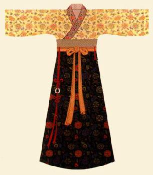
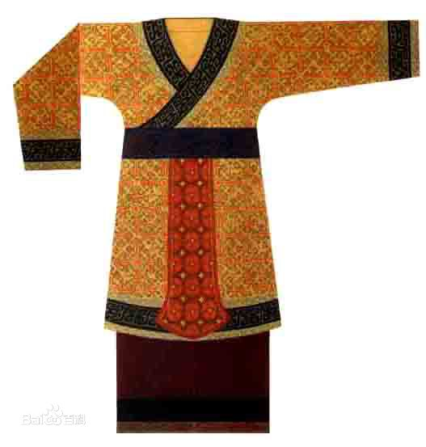

殷商时期
商代服饰不论尊卑和男女都是采用上下两段的形制，上着衣，下穿裳，后世称服装为“衣裳”，便是源自于此。其服饰的腰身和衣袖基本上设计为紧窄的样式，长度齐膝，便于活动。古代华夏族汉服上衣下裳，束发右衽的装束特点，就是在商代形成的。
虽然商代服饰的基本形制趋同，但实际上商朝的服饰还是具有相当严格的等级制度的，比较高级的染织品、刺绣品及装饰品都由奴隶主阶级享用，而底层的民众只能穿麻布以及与麻布同类的葛布制成的编织物。据研究表明，商代高级权贵的服饰通常是上身穿短衣，交领右衽，衣长及臀，袖长及腕，袖口窄小，下身穿带褶短裙，腰间束有宽带，裹腿；脚上穿翘尖鞋。贵族妇女则上身穿长及足踝的大衣，交领，长袖，腰间束宽带和蔽膝。蔽膝围于衣服前面的大巾，用以蔽护膝盖，蔽膝呈上窄下宽状。脚上穿履，头戴圆箍形冠卷。
殷商时期，服饰能够出现这样的等级差别，与当时相对于原始经济而言的繁荣和技术进步密切相连。正是由于当时的经济有了一定的发展，才有可能为社会提供众多的服饰资料，统治阶级才能择其优者自用，而弃其劣者予贫民；才能够在服饰材料的质地、颜色、图案上分等论级，这就给后代的等级制度奠定了一定的基础，并在后世正式确立了章服制度。“章服制度”始自我国奴隶社会，封建社会时期发展完备，章服制度对帝王和百官公卿所穿的衣服，底色和花纹等设置了相关的规定，作为区别身份等级的标志。
- 
- 


 服饰
服饰